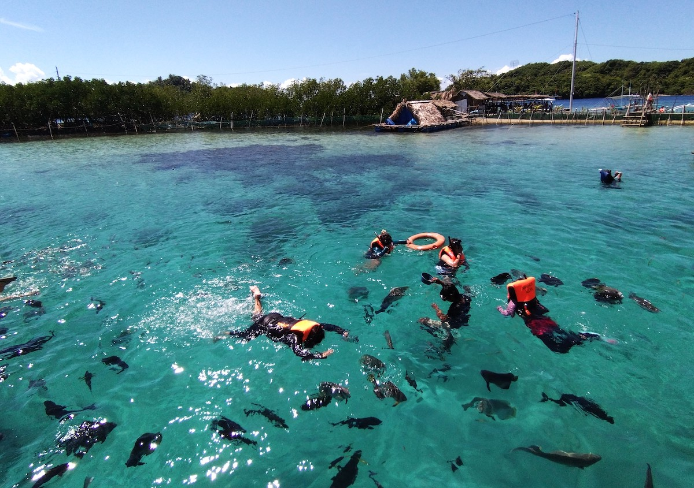

Architecture
Colonial Churches
Spanish-era stone churches built from the 17th century still stand as active parishes across the province.
View churchesThe name Sorsogon derives from the Bikol word surusuog, meaning "a place often visited by strangers." Long before Spanish colonizers arrived, the area was inhabited by Aeta and Malay-descended communities who thrived along the coast through fishing, trade, and agriculture.
The province's position at the southern tip of Luzon made it a natural crossroads — for traders sailing between Luzon and the Visayas, for missionaries expanding the colonial church, and for revolutionaries fighting for independence.
Pre-16th Century
Aeta (Agta) communities and Malay settlers establish coastal barangays. Trade with Chinese merchants and Visayan islands is already flourishing.
1569
Spanish forces under Legazpi consolidate control of Bicol. Franciscan and Augustinian missionaries establish missions and the first Christian communities.
1636
Sorsogon is formally carved out as a separate administrative province under Spanish colonial rule, with the capital set in the town of Sorsogon.
1898
Following the revolution against Spain, Sorsogon becomes part of the proclaimed Philippine Republic. Local heroes play a key role in regional resistance.
1941–1945
Japanese forces occupy the province. Guerrilla activity is intense, and many towns sustain damage during the 1945 liberation campaign.
1971
The previously divided provinces of Sorsogon and Magallanes are reunified into a single province by presidential decree.
2000
The capital town is converted into a component city, recognizing its growth as the commercial and governmental hub of the province.
2001
The WWF endorses Donsol's whale shark program as a model for responsible wildlife tourism, transforming the province's international profile.
Spanish-era stone churches built from the 17th century still stand as active parishes across the province.
View churches
Indigenous traditions and colonial customs blend in Sorsogon's vibrant, year-round festival calendar.
Explore festivals
The Bulusan Volcano Natural Park preserves the province's exceptional biodiversity for future generations.
Explore wildlife